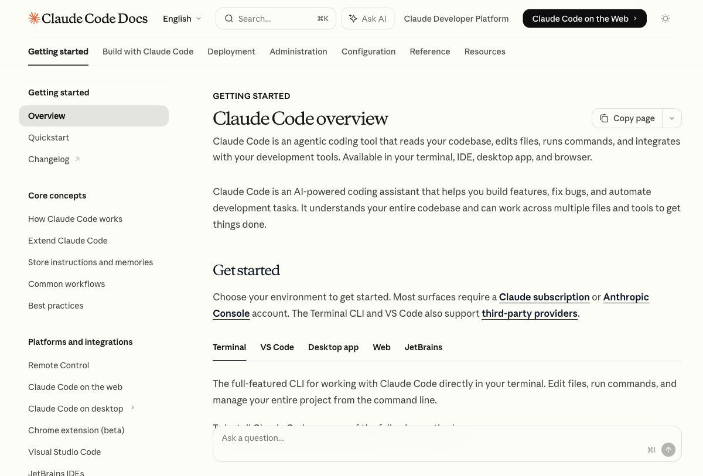
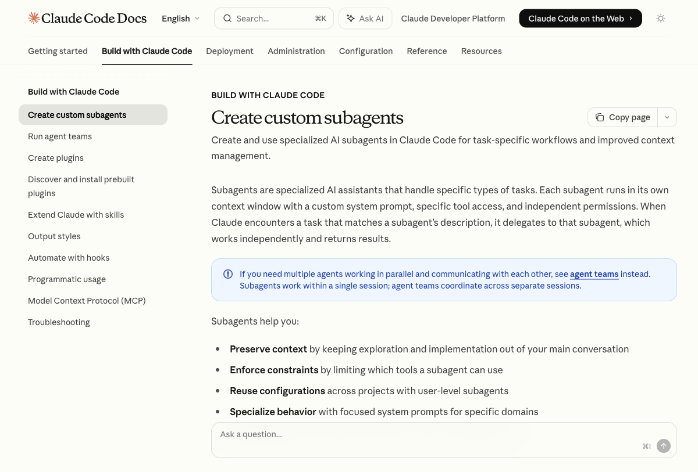
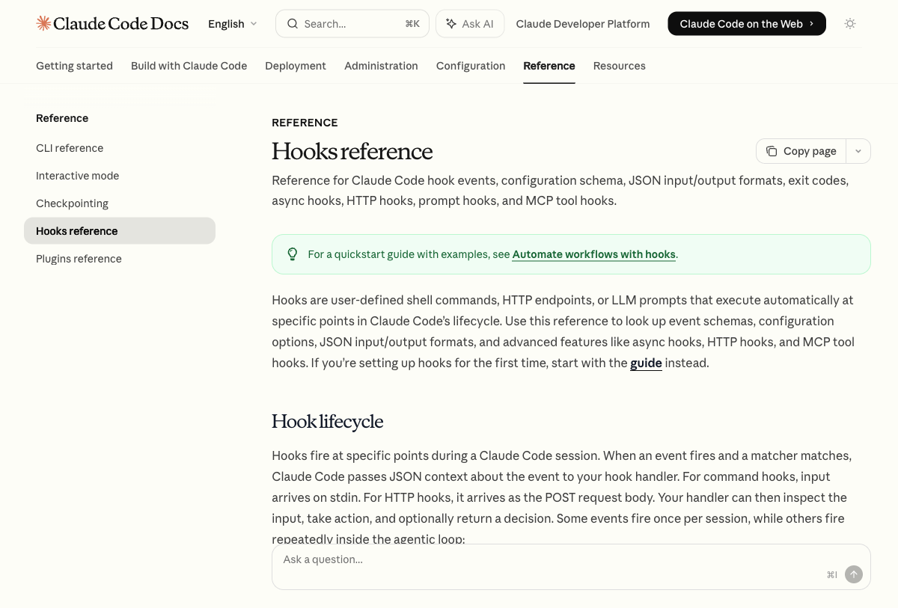
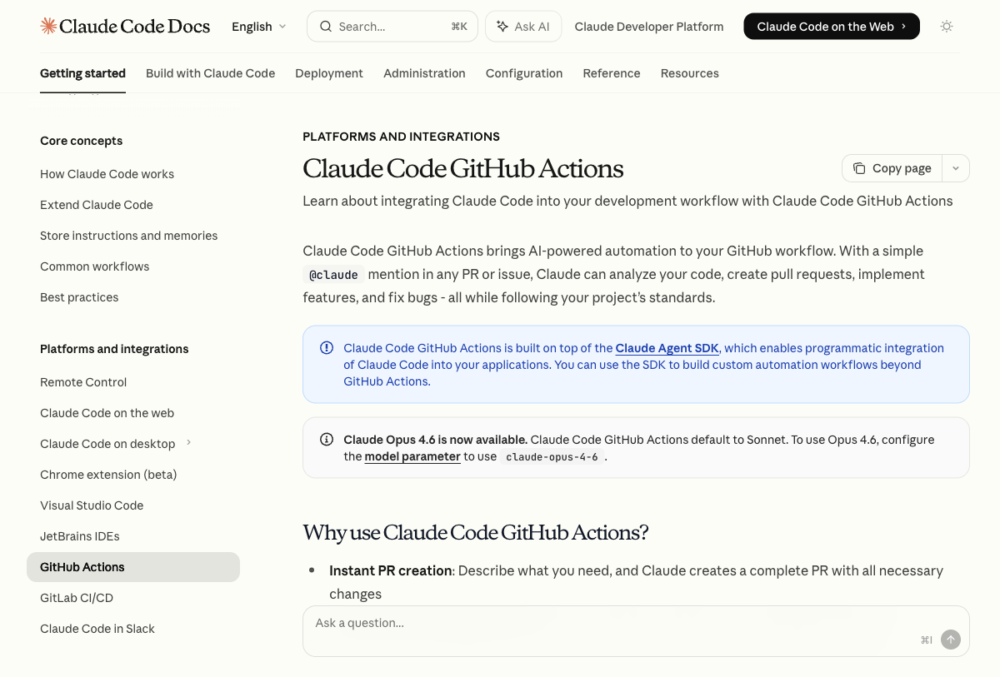
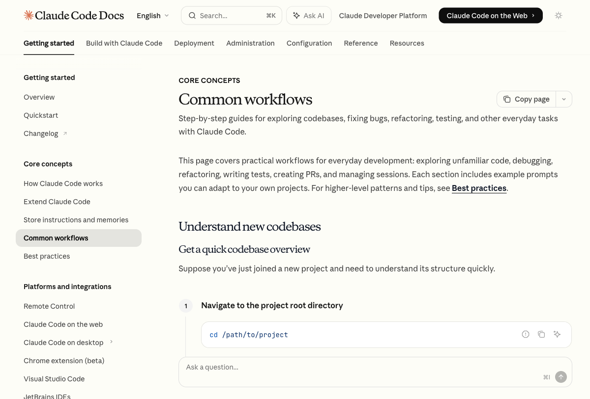
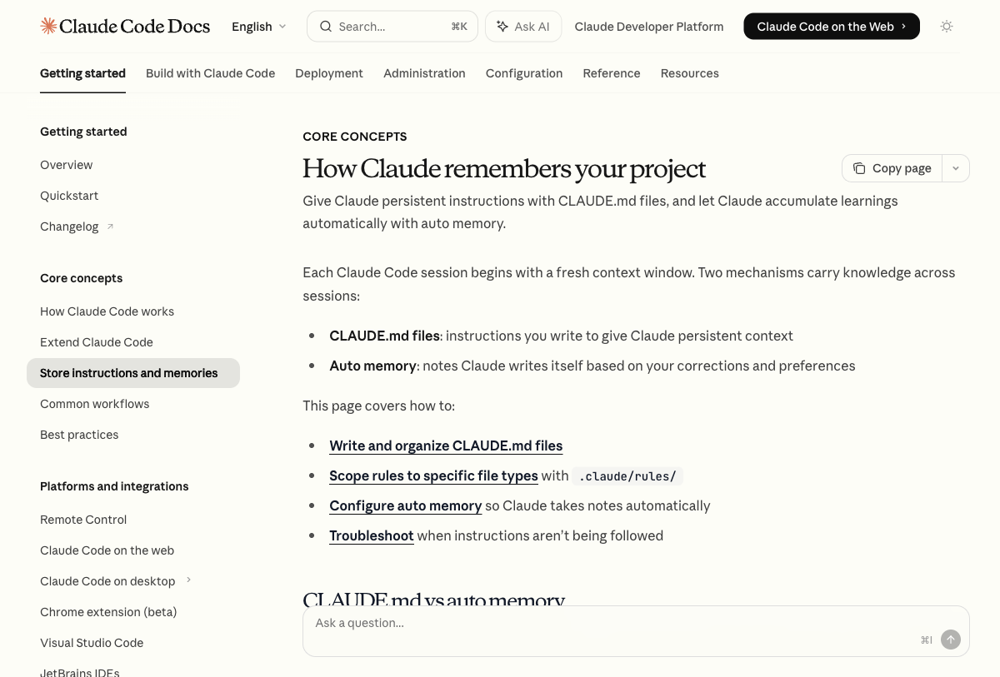

ExplAIn
מדריך הגמרא לבינה המלאכותית
מאי AI? | מאי Claude? | מאי Claude Code?
מוצג על ידי דביר ביטון | לומדים בינה מלאכותית בגובה האוזניים
👋 מי אני ולמה אנחנו כאן?
דביר ביטון
יזם טכנולוגי, מומחה AI ומייסד ExplAIn
משלב עולמות: טכנולוגיה, עסקים ולמידה
מאמין שכל אחד יכול ללמוד AI — בגובה האוזניים
ExplAIn
לומדים בינה מלאכותית בגובה האוזניים
בלי ז'רגון מיותר. בלי פחד. עם המון חיוך.
🎓 מה נלמד היום?
מה זה AI, מה זה Claude, ואיך Claude Code הופך אתכם לסופר-מפתחים
👥 למי זה מיועד?
לכל אחד — מתחיל ועד מנוסה, טכני ועד לא-טכני בכלל
🏁 מה נדע בסוף?
לעבוד עם Claude כמו מקצוענים ולהריץ Claude Code בעצמנו
פרק א׳
מה זה בינה מלאכותית?
מהיסוד — בלי להסתבך
🧠 מה זה AI — בינה מלאכותית?
תנו רבנן
מהי בינה מלאכותית? מחשב שלומד מדוגמאות — לא מתוכנת ידנית, אלא רואה אלפי דוגמאות ומגלה בעצמו את הדפוסים.
משל
כמו ילד שלמד לזהות כלב — לא קרא מילון, לא קיבל הגדרה. הוא ראה אלף כלבים, ובסוף הוא מזהה כלב חדש שמעולם לא ראה.
ונמשל
AI רואה מיליוני דוגמאות — תמונות, טקסטים, קוד, שיחות — ולומד דפוסים. כך הוא יכול לנבא, לזהות ולהבין דברים חדשים.
📚 מאי LLM? — מודל שפה גדול
תלמוד בבלי, מסכת AI, דף א׳
תלמיד שקרא כל ספר שנכתב אי פעם — לא זוכר מילים כמילון, אלא זוכר דפוסים. איך מילים מתחברות, איך רעיונות זורמים.
משל
כמו בוגר ישיבה שלמד כל הש"ס — הוא לא מצטט בע"פ, אבל שאל אותו שאלה ותקבל תשובה מעמיקה עם הקשרים.
ונמשל
LLM למד מטריליוני מילים מהאינטרנט, ספרים, קוד — ועכשיו הוא יכול לכתוב, לנתח ולהסביר כמו מומחה.
🔤 טוקנים — אבני הבניין
תנו רבנן
כמו אותיות התורה, שכל אחת מהן עולם בפני עצמה — כך הטוקן: יחידת המידע הקטנה ביותר שממנה בנוי כל משפט.
טוקן = חתיכת מילה או מילה שלמה. "שלום" = טוקן אחד. "Artificial" = טוקן אחד. "Intelligence" = טוקן אחד.
"Hello World" → 2 tokens
"I love AI" → 4 tokens
"שלום עולם" → 3 tokens
"Artificial Intelligence" → 2 tokens
💡 חלון ההקשר (Context Window): כמה טוקנים Claude יכול "לזכור" בתוך שיחה אחת. Claude 3.7 — עד ~200,000 טוקנים — כ-150,000 מילים, כמו ספר שלם!
🏋️ אימון מול שימוש — הבדל עצום
🏗️ אימון המודל
- מיליארדי טקסטים מהאינטרנט
- חודשים של חישוב ברציפות
- אלפי GPU ענקיות
- מיליוני דולרים של עלויות
- נעשה פעם אחת (ואז מעדכנים)
💬 שימוש במודל
- אתה שולח הודעה
- Claude מנבא מילה אחר מילה
- שניות ספורות לתשובה
- עלות: כמה סנטים לשאלה
- זמין לכולם מכל מקום
✨ הנקודה המדהימה: Anthropic עשו את האימון הכבד פעם אחת — ואתה נהנה מהתוצאה מיידית, בכל שאלה, בכל שפה!
פרק ב׳
צ'אטבוטים
ואיך עובדים איתם נכון
🤖 מאי צ'אטבוט?
פלוגתא דרב ושמואל
אמר רב: צ'אטבוט הוא כמו מזכיר שקרא כל ספר — מכיר הכל, אבל לא יודע על החיים שלך.
אמר שמואל: כמו מנוע חיפוש שלמד לדבר — לא מחזיר קישורים, מחזיר תשובות.
משל
כמו ששאלת שאלה לחבר חכם שקרא הכל — הוא יענה מהר ובעומק, אבל לא יזכור מה סיפרת לו אתמול.
✅ מה הוא יכול?
- כתיבה ועריכת טקסטים
- כתיבת קוד ודיבאג
- ניתוח מסמכים ונתונים
- תרגום לעשרות שפות
- חשיבה לוגית ופתרון בעיות
❌ מה הוא לא יכול?
- לגלוש לאינטרנט (ללא כלים)
- לזכור שיחות קודמות (ללא Projects)
- להיות בטוח 100% לעולם
- לדעת מה קרה אחרי ה-cutoff
- לבצע פעולות בעולם הממשי
🎯 אמנות ה-Prompt
תנו רבנן
"כמדה שאדם מודד — מודדין לו" — כמה שתיתן לClaude הקשר, פרטים ובהירות, כך תקבל חזרה.
❌ Prompt רע
"תעזור לי עם האתר שלי"
אין הקשר. Claude לא יודע מה, לאיזה אתר, לאיזה מטרה.
✅ Prompt טוב
"אני בונה אתר React לחנות מקוונת. הקומפוננטה שלי צריכה עגלת קניות עם הוספה/הסרה פריטים ועדכון סכום בזמן אמת"
🎯
היה ספציפי
מה בדיוק אתה צריך?
📋
תן הקשר
מי אתה? מה הפרויקט?
📄
ציין פורמט
רשימה? קוד? טבלה? הסבר?
פרק ג׳
מי זה קלוד?
הסיפור של הבינה המלאכותית השונה
🤖 פגשו את קלוד
Claude הוא מודל שפה גדול שנוצר על ידי Anthropic — חברה שמאמינה שAI צריך להיות בטוח, ישר ומועיל.
אמרי נהרדעי
Anthropic הוקמה ב-2021 על ידי לשעבר עובדי OpenAI בכירים — שרצו לבנות AI שהוא לא רק חכם, אלא גם בטוח וישר.
🛡️
בטוח יותר
Constitutional AI — ערכים מובנים
✅
יותר ישר
אומר "אני לא יודע" כשצריך
🧠
מעמיק יותר
חשיבה מורכבת ורב-שלבית
🔤 למה "קלוד"? בהשראת Claude Shannon — המתמטיקאי שהמציא את תורת המידע, הבסיס לכל תקשורת דיגיטלית מודרנית.
⚖️ Constitutional AI — הגיבוי הערכי
תנו רבנן
Constitution = חוקה. Claude לא רק "לומד לענות נכון" — הוא מאומן עם ערכים. כמו תלמיד שקיבל חינוך ולא רק ידע.
🔴 רוב ה-AI
לומד ממה שמשתמשים מאשרים
בעיה: אם משתמשים מאשרים תשובות גרועות — המודל לומד תשובות גרועות.
🟡 Claude
לומד מחוקה של ערכים שהוגדרה מראש
ערכים: כנות, בטיחות, אי-נזק, עזרה אמיתית לאנושות.
⚠️ חשוב לדעת: Claude יסרב לבקשות מסוכנות, לא אתיות או מזיקות — גם אם תנסחו אותן בחכמה מרובה.
💡 זה טוב! זה אומר שאתם עובדים עם AI שאתם יכולים לסמוך עליו — לא כזה שיגיד לכם כל מה שתרצו לשמוע.
👨👩👧 משפחת Claude — בחרו את הנכון
🐣
Claude Haiku
- ⚡ הכי מהיר
- 💰 הכי זול
- 📝 למשימות פשוטות
- סיווג, תרגום קצר, מענה מהיר
⚡
Claude Sonnet
- ⚖️ מאוזן לחלוטין
- 🏆 ביצועים מצוינים
- 🌟 הכי שימושי ביומיום
- Claude Code מריץ אותו
🧠
Claude Opus
- 🥇 הכי חכם
- 🔬 למשימות מורכבות
- 🐢 איטי יותר
- מחקר עמוק, ניתוח מורכב
📌 כלל האצבע: לרוב השימושים — Sonnet. לניתוח מורכב ומחקר — Opus. לאוטומציה מהירה וזולה — Haiku.
פרק ד׳
Claude.ai
הממשק שכולם יכולים להשתמש בו
🌐 claude.ai — הכניסה הראשית
claude.ai
Try Claude
Sign In
Claude
How can I help you today?
שאל אותי כל שאלה...
📝 כתיבה
💻 קוד
🔍 ניתוח
לחיצה → כניסה לחשבון
ניסיון חינם → מיד!
🌍 נגיש מכל מקום: Chrome, Firefox, Safari, Edge — בכל מחשב, טאבלט וטלפון. ללא התקנה.
📝 יצירת חשבון — שלב אחר שלב
1
כנסו לכתובת claude.ai בכל דפדפן
2
לחצו על הכפתור "Sign Up" בפינה הימנית העליונה
3
הכניסו כתובת אימייל וסיסמה — או בחרו "Continue with Google" לכניסה מהירה
4
אמתו את כתובת האימייל שלכם — Claude ישלח אימייל אימות
5
בחרו תוכנית — Free להתנסות ראשונית, או Pro לשימוש מלא
⚡ הכי מהיר: Google Sign-In — שלושה קליקים ואתם בפנים!
💎 Claude Pro — למה כדאי?
Free — חינם
- שיחות מוגבלות ביום
- Claude Sonnet בלבד
- ללא Projects
- ללא Artifacts מתקדמים
- איטי בשעות עומס
$0 / חודש
Pro — מקצועי 💎
- שיחות ללא הגבלה
- כל המודלים: Haiku, Sonnet, Opus
- Projects — זיכרון ארוך טווח
- Artifacts מלאים
- Priority access — תמיד מהיר
$20 / חודש
⚠️ חשוב: לשימוש ב-Claude Code — חובה להיות Pro! Claude Code דורש גישה מלאה למודלים.
🎓 סטודנטים: בדקו תוכנית חינוכית — Anthropic מציעה הנחות לסטודנטים ומוסדות אקדמיים!
💬 ממשק השיחה — מה יש כאן?
claude.ai/new
+ New Chat
PROJECTS
📁 My Project
RECENT
React help...
SQL query...
claude-sonnet-4 ▼
Artifacts ▢
How can I help you today?
Message Claude...
⬆
Projects — זיכרון קבוע
בחירת מודל
Artifacts Panel
⌨️ טיפ: Shift + Enter = שורה חדשה בלי לשלוח | Enter = שליחה
✨ Artifacts ו-Projects — הכוח האמיתי
🎨 Artifacts
Claude יוצר קוד, HTML ואפליקציות שעובדות בזמן אמת — ממש בתוך הדפדפן!
- "צור מחשבון React" → מחשבון אינטראקטיבי
- "צור גרף נתונים" → גרף מונפש
- "צור לוח משחק" → משחק שעובד
📁 Projects
- זיכרון ארוך טווח בין שיחות
- שמירת הוראות קבועות (System Prompt)
- העלאת קבצים לשמירה
- עבודה צוותית משותפת
- Claude זוכר את כל ההקשר!
צור לי אפליקציית React של לוח שנה עם אפשרות להוספת אירועים, צבעים ותזכורות
🚀 Artifacts = הסופרפאוור של Claude. במקום לקבל טקסט — אתם מקבלים מוצר עובד. נסו עכשיו ב-claude.ai!
פרק ה׳
ההתקנה הגדולה
שני שבילים אחד לעיר אחת
🤔 אמר רב vs אמר שמואל — שתי דרכים
גמרא
אמר רב: יש לו Windows. אמר שמואל: יש לו Mac. שניהם הולכים לאותו מקום — רק הדרך שונה
🪟 Windows
- ✅ הירשם ל-Claude Pro
- ✅ התקן VS Code
- ✅ התקן Git (חובה!)
- ✅ התקן Claude Desktop (optional)
- ✅ התקן Claude Code Extension
🍎 Mac
- ✅ הירשם ל-Claude Pro
- ✅ התקן Claude Desktop
- ✅ התקן VS Code
- ✅ התקן Claude Code Extension
💡 Mac פשוט יותר. Windows צריך Git בנפרד.
💳 שלב 0 לכולם — מנוי Claude Pro
claude.ai/settings/billing
Free
$0 / month
מוגבל מאוד
✨ Pro
$20 / month
Upgrade to Pro ⬆
1כנסו ל-claude.ai ← Settings ← Billing
2בחרו Claude Pro ($20/month)
3הכניסו פרטי תשלום ואשרו
⚠️ בלי מנוי Pro, Claude Code לא יעבוד כמו שצריך!
📦 Windows — שלב 1: VS Code
🪟 Windows
code.visualstudio.com
Visual Studio Code — Code Editing. Redefined.
⬇ Download for Windows
1כנסו ל-code.visualstudio.com
2לחצו "Download for Windows" — הכפתור הכחול הגדול
3הריצו את המתקין שהורד
4❗ סמנו "Add to PATH" ו-"Open with Code"
code --version # לבדיקה שהותקן
💡 VS Code = "בית המדרש" שלנו. כל הקוד ייכתב כאן!
🔧 Windows — שלב 2: Git
🪟 Windows
מאי Git?
Git הוא מערכת לניהול גרסאות קוד. כמו הגניזה הקהירית — שומר כל גרסה שאי פעם נכתבה, לעולם לא מאבד שורה אחת
git-scm.com/download/win
Git for Windows
⬇ Download for Windows
1כנסו ל-git-scm.com/download/win
2הורידו והריצו את המתקין
3השאירו את כל ברירות המחדל (Next → Next → Next → Install)
git --version # לבדיקה
💡 Git חובה ל-Windows כי Claude Code משתמש בו לזיכרון ולניהול קבצים!
🔌 Windows — שלב 3: Claude Code Extension
🪟 Windows
VS Code — Extensions Panel
🔍 Claude Code
Claude Code
Anthropic · ⭐ 4.9
Install
👆 לחצו Install על התוסף של Anthropic
1פתחו VS Code
2לחצו על סמל ה-Extensions (4 ריבועים בצד שמאל)
3חפשו "Claude Code" בתיבת החיפוש
4לחצו Install על התוסף של Anthropic
לאחר ההתקנה תראו סמל Claude בסרגל הצד! 🤖
✅ Windows — שלב 4: התחברות ראשונה
🪟 Windows
1ב-VS Code לחצו על סמל Claude בסרגל הצד
2לחצו "Connect with Claude.ai"
3תועברו לדפדפן לאשר את ההתחברות (היכנסו לחשבון שלכם)
4חזרו ל-VS Code — Claude Code מוכן לעבודה!
🎉 מזל טוב! Claude Code מותקן ב-Windows שלכם
claude --version # בטרמינל של VS Code לבדיקה
Mac — הדרך הקלה יותר
Apple made it easier 🍎
🍎 Mac — שלב 1: Claude Desktop
🍎 Mac
claude.ai/download
🖥 Mac | 🪟 Windows
Claude Desktop for Mac
⬇ Download for Mac (.dmg)
Claude.dmg — 85 MB
1כנסו ל-claude.ai/download
2הורידו את Claude Desktop למק
3פתחו את ה-.dmg וגררו לתיקיית Applications
4פתחו Claude Desktop והתחברו עם חשבון Claude
💡 Claude Desktop ב-Mac = Claude Code + Claude Chat + MCP servers. הכל ביחד!
ב-Mac האפליקציה כוללת Terminal integration מובנה 🖥
💻 Mac — שלב 2: VS Code + Extension
🍎 Mac
1כנסו ל-code.visualstudio.com והורידו למק
2פתחו את ה-.dmg וגררו לתיקיית Applications
3פתחו VS Code
4Extensions panel — חפשו "Claude Code" — Install
5התחברו עם חשבון Claude שלכם
🎉 מזל טוב! ב-Mac סיימתם!
💻 VS Code
לכתיבת קוד עם Claude Code — עורך מלא עם כל ה-features
🤖 Claude Desktop
לשיחות, MCP servers, Terminal — הכל ביחד
פרק ו׳
Claude Code — הכלי האולטימטיבי
כשאתה הבוס והוא המפתח
🛠️ מאי Claude Code?
תנו רבנן
Claude Code הוא AI שעובד ישירות בתוך הקוד שלך. הוא לא רק עונה — הוא גם כותב, מתקן, מנהל ומסביר. כולו לבנות — וכולו לשמור
🔌
VS Code Extension
Claude בתוך עורך הקוד — רואה את הקבצים שלך, עובד בצד
⌨️
Terminal / CLI
claude
בטרמינל, גישה מלאה לפרויקט
🤖
Agentic Mode
Claude עובד לבד — שואל כשצריך, ממשיך בלי עצירות
🖥️ הדגמה חיה — Claude Code — תיעוד רשמי
code.claude.com/docs/en/overview

💡 זה האתר שממנו למדנו את כל מה שבמצגת — תיעוד Anthropic מתעדכן כל הזמן
📁 פתיחת פרויקט — שלב ראשון
1פתחו VS Code
2File → Open Folder → בחרו תיקיית הפרויקט שלכם
3לחצו על סמל Claude בסרגל הצד
4התחילו לשוחח עם Claude על הפרויקט! 💬
# בטרמינל (CLI):
cd /path/to/your/project
claude
💡 פתחו תמיד מתיקיית הפרויקט! Claude יראה את כל הקבצים וההקשר המלא
📜 CLAUDE.md — ספר הזיכרון
משנה
כמו תפילין — שמים כל בוקר. CLAUDE.md נטען בכל שיחה וזה הזיכרון הקבוע של Claude עם הפרויקט שלך
📋 מה לשים ב-CLAUDE.md
- פקודות build/test של הפרויקט
- סגנון קוד (TypeScript? Hooks?)
- כללים חשובים (קבצים שלא לגעת בהם)
- הקשר כללי על הפרויקט
📄 דוגמה:
# My Project
## Build
npm run build
## Style
- TypeScript always
- Hooks over Classes
## Important
- Never touch /legacy
💡 הקלידו /init ב-Claude Code — יצור CLAUDE.md אוטומטי!
🔐 מצבי הרשאות — כמה כוח לתת לו
🛡️
Normal Mode
ברירת מחדל
Claude שואל לפני כל פעולה
"האם אני יכול לשנות auth.js?"
✅ בטוח ביותר
⚡
Auto-Accept
מהיר
Claude עושה הכל לבד, לא שואל אישור
⚡ מהיר מאוד
👁️
Plan Mode
קריאה בלבד
רק קורא, לא כותב. תכנון בלבד
🔵 הכי בטוח
⌨️ להחליף בין מצבים: Shift + Tab
⚠️ Auto-Accept: שימוש בזהירות! Claude יכול לשנות קבצים חשובים ללא אישור
⌨️ פקודות חשובות ב-Claude Code
📋 Slash Commands
| פקודה | מה עושה |
|---|
| /help | עזרה כללית |
| /clear | ניקוי השיחה |
| /cost | בדיקת עלות שימוש |
| /init | יצירת CLAUDE.md |
| /plan | מצב תכנון בלבד |
| /memory | ניהול זיכרון |
| /todos | רשימת משימות |
| /model | החלפת מודל |
💻 CLI — בטרמינל
claude # שיחה חדשה
claude -c # המשך שיחה אחרונה
claude -r # בחר מהיסטוריה
claude -p "שאלה" # ללא אינטראקציה
-p = non-interactive mode. מעולה לסקריפטים ואוטומציה!
💡 טיפים לעבודה אפקטיבית
🎯 היה ספציפי
✅ "תקן את הבאג בauth.js שגורם ל-500 error כשסיסמה שגויה"
❌ "תקן בעיה"
📎 השתמש ב-@
@src/auth.js
כדי להפנות לקובץ ספציפי בשיחה
🧹 נהל הקשר
/context — לראות כמה זיכרון נשאר
/clear — בין משימות שונות
🖼️ Ctrl+V בטרמינל — הדבק צילום מסך ישירות לשיחה עם Claude!
🔄 Shift+Tab — לשנות מצב הרשאות בזמן שיחה
🎬 Claude Code בפעולה — דוגמה
כגון
נניח שיש לנו אתר ו-button לא עובד. מה עושים? פותחים Claude Code ומדברים אליו!
VS Code — Claude Chat
הbutton ה-Submit בform לא עובד — לוחצים ולא קורה כלום 🤷
🤖 אני רואה את הבעיה ב-src/components/Form.jsx שורה 47 — חסר event.preventDefault(). אני מתקן...
✏️ Modified: src/components/Form.jsx (+1 line, -0 lines)
💡 Claude רואה את הקבצים שלך ישירות! לא צריך להדביק קוד — הוא כבר יודע
פרק ז׳
עולם הסוכנים
כשה-AI מנהל צוות של AI
🤖 מאי Agent? — מה זה סוכן?
תנו רבנן
Agent = AI שיכול לפעול באוטונומיה. הוא לא רק עונה — הוא תוקף, בודק, מתקן ומסכם
משל: כמו מנהל פרויקט שנותנים לו משימה — הוא מחלק לסוכנים, עוקב, מאסף תוצאות ומגיש דוח מסכם
ונמשל: Claude Code Agent = אתה נותן לו משימה גדולה. הוא שואל בהתחלה, עובד לבד, מדווח בסוף
🔧🔧🔧
Sub-Agents
העובדים בשטח
🔀 Sub-Agents — צוות של סוכנים
גמרא
כמו ישיבה גדולה — הרב הראשי (Main Agent) מחלק שאלות לתלמידים (Sub-Agents). כל אחד חוקר פרק אחר ומביא תשובה
Main Agent
- מקבל המשימה הגדולה
- מתכנן ומחלק לסוכנים
- מאסף תוצאות
- מגיש דוח סופי
Sub-Agents
- כל אחד מתמחה בתחום
- עובדים במקביל
- מדווחים ל-Main Agent
# Main Agent prompt:
"Build a full e-commerce website with
product catalog, cart, and checkout"
# Claude launches sub-agents:
→ Sub-Agent 1: Build product catalog
→ Sub-Agent 2: Build shopping cart
→ Sub-Agent 3: Build checkout flow
💡 עבודה מקבילה = מהיר פי כמה! כל Sub-Agent עובד בו-זמנית על חלק אחר
🎯 Skills — מיומנויות מתוכנתות
מאי Skill?
סקריפטים מיוחדים שמלמדים את Claude לעשות דברים ספציפיים באופן קבוע — כמו מתכון שכתוב מראש
מה זה Skill
- קובץ SKILL.md בתיקייה מיוחדת
- מגדיר: "כשמשתמש מבקש X, עשה Y"
- כמו מתכון — Claude ממלא לפי ההוראות
- ניתן לשתף ולשכפל בין פרויקטים
דוגמאות Skills
- /commit — יצירת git commit חכם
- /review-pr — בדיקת pull request
- /deploy — פריסה לשרת
- /test — הרצת בדיקות אוטומטיות
# בתוך Claude Code:
/commit # Claude כותב commit message חכם
/deploy # Claude פורס לשרת אוטומטית
🔌 MCP — Model Context Protocol
מאי MCP?
פרוטוקול שמאפשר ל-Claude להתחבר לכלים חיצוניים. כמו תקע חשמלי סטנדרטי — כל כלי יכול להתחבר
מה זה
פרוטוקול פתוח של Anthropic לחיבור AI לכלים חיצוניים
דוגמאות
- GitHub
- Slack
- Notion
- Google Drive
- Figma
- Databases
אפשרויות
Claude יכול לקרוא ולכתוב ישירות לכלים האלה ממשק אחד
Claude Desktop — Settings → MCP Servers
כלים מחוברים:
🟢 GitHub — מחובר ✅
🟢 Slack — מחובר ✅
🟢 Notion — מחובר ✅
💡 Claude Desktop ב-Mac = הדרך הכי קלה לנהל MCP Servers!
📦 GitHub — הגניזה הקהירית של הקוד
מאי GitHub?
כמו הגניזה הקהירית — שומר כל גרסה שאי פעם כתבת. לא מאבדים כלום לעולם
מושגי בסיס
- Repository (Repo) = תיקיית פרויקט
- Commit = שמירת גרסה
- Branch = ענף פיתוח נפרד
- Pull Request = בקשת מיזוג
- Push / Pull = שליחה / קבלה
Claude Code + GitHub = זוג מנצח
- מנהל commits אוטומטי
- כותב commit messages חכמים
- בודק pull requests
- עוקב אחר שינויים
git init # התחל repo חדש
git add . # הוסף שינויים לתור
git commit -m "" # שמור גרסה
git push # שלח ל-GitHub
🔒 אבטחה — ממה להיזהר?
⚠️ CRITICAL: Claude Code מריץ פקודות על המחשב שלך! יש להבין מה אתה מאשר לפני כל פעולה
⚠️ Auto-Accept Mode
Claude יכול למחוק קבצים, לשנות הגדרות. השתמש בזהירות רבה!
⚠️ Prompt Injection
קבצים זדוניים יכולים "להכניס הוראות" ל-Claude. בדקו מה Claude עושה לפני אישור
⚠️ API Keys בקוד
NEVER save API keys in code! השתמש תמיד בקבצי .env
🛡️ הכלל הזהב: תמיד תקרא מה Claude עומד לעשות לפני שאתה לוחץ Approve
✅ כללי זהב לאבטחה
1
עבוד ב-Normal Mode בדרך כלל — Claude שואל לפני כל פעולה
2
השתמש ב-Plan Mode להבנת המהלך לפני ביצוע
3
אל תשמור סיסמאות ו-API Keys ישירות בקוד
4
הוסף .env ל-.gitignore כדי שלא יעלה ל-GitHub
5
גיבויים! Git commit לפני כל שינוי גדול
# .gitignore — הוסף שורות אלו:
.env
.env.local
*.key
secrets/
ℹ️ Claude Code לא ישלח את הסיסמאות שלך לשום מקום — אבל זהירות עדיין חשובה ותמיד שווה
פרק ח׳
Claude Code בטרמינל
הכוח המלא בשורת הפקודה
💻 Claude Code בטרמינל
שתי דרכים
יש לנו שתי דרכים לדבר עם Claude Code:
1) בתוך VS Code — ממשק גרפי
2) בטרמינל — שורת הפקודה
VS Code Extension
- ממשק גרפי מלא
- לחצנים ותפריטים
- פשוט יותר למתחילים
Terminal / CLI
- שורת פקודה עוצמתית
- יותר כוח ושליטה
- Automation מלא אפשרי
# פתיחה בסיסית בתיקיית פרויקט:
cd /my-project
claude
# עם שאלה ישירה:
claude "מה עושה הקובץ הזה?"
# המשך שיחה קודמת:
claude -c
⌨️ פקודות CLI החשובות
| פקודה |
מה עושה |
claude | שיחה חדשה |
claude -c | המשך שיחה אחרונה |
claude -r | בחר שיחה מהיסטוריה |
claude -p "שאלה" | שאל בלי מצב אינטראקטיבי |
claude --model opus | שימוש במודל Opus |
claude --version | הצג גרסה |
/help | עזרה בתוך השיחה |
/clear | נקה שיחה |
/context | ראה זיכרון נוכחי |
/cost | עלות שימוש עד עכשיו |
/exit | צא מהשיחה |
Shift+Tab | החלף בין רמות הרשאה |
Ctrl+C | עצור פעולה מיידית |
⚡ קיצורי מקלדת — ניהול שיחות
ניהול כללי
| מקש | פעולה |
|---|
Ctrl+C | עצור פעולה |
Ctrl+D | צא לגמרי |
Ctrl+L | נקה מסך |
Ctrl+U | מחק שורה |
שורה חדשה בתוך ההודעה
| מקש | איפה |
|---|
Option+Enter | Mac (ברירת מחדל) |
Shift+Enter | iTerm2, Ghostty |
Ctrl+J | כל המערכות |
Esc+Esc | Rewind — חזור אחורה |
💡 Claude Code עובד הכי טוב ב-Mac עם iTerm2 או Ghostty
🔀 כמה שיחות במקביל
גמרא
כמו תלמידי ישיבה — כל אחד לומד ספר אחר, המחשבות לא מתערבבות. כל שיחה = עולם משלה
1
פתחו טאב חדש בטרמינל:
Cmd+T (Mac) /
Ctrl+Shift+T (Windows)
2
עברו לתיקיית פרויקט אחרת: cd /other-project
3
פתחו Claude: claude — וקיבלתם שיחה עצמאית חדשה!
ℹ️ כל תיקייה = שיחה נפרדת עם הקשר משלה. CLAUDE.md שונה = אישיות שונה
# טרמינל 1 — פרויקט Frontend
cd ~/projects/frontend && claude
# טרמינל 2 — פרויקט Backend
cd ~/projects/backend && claude
פרק ט׳
טכניקות מתקדמות
מה שלמדנו מהתיעוד הרשמי של Anthropic
🔄 תהליך העבודה המנצח
סוד ההצלחה
Anthropic ממליצים על 4 שלבים קבועים. דלגו עליהם — תשלמו מחיר. עקבו אחריהם — קוד נקי יותר, פחות שגיאות
🔍
Explore
קראו קוד, הבינו ארכיטקטורה — אל תכתבו כלום
📋
Plan
תכננו גישה, כתבו TODO — אל תממשו עדיין
⚡
Implement
ממשו בביטחון, ריצו טסטים — הקוד האמיתי
✅
Commit
Git commit עם הודעה ברורה — שמרו התקדמות
💡 רוצים שקלוד יתכנן לפני שיממש? כתבו בהנחיה:
"think step by step before writing any code"
— או השתמשו בסוכן Plan המובנה
🧠 ניהול חלון ההקשר
משל
חלון ההקשר הוא כמו שולחן עבודה — ככל שיש עליו יותר דברים, קשה יותר למצוא את מה שצריך. ניקוי שולחן = שיחה חדשה
⌨️ פקודות מפתח
# ניקוי מלא — התחלה מחדש
/clear
# דחיסה חכמה — שמרו מה שחשוב
/compact
# דחיסה עם הנחיות
/compact "התמקדו רק בבאג ב-auth module"
📏 גודל CLAUDE.md
- 🟢 מתחת ל-200 שורות — קלוד מקיים הכל
- 🟡 200-500 שורות — עלולים לדלג על חלקים
- 🔴 מעל 500 שורות — ביצועים גרועים מאוד
- ✅ טיפ: קישורים לקבצים נפרדים עדיפים
ℹ️ כלל זהב: השתמשו בסוכני Explore לחקר קוד — הם עובדים בחלון הקשר נפרד ולא "מלכלכים" את שלכם
🤖 סוכנים מובנים ב-Claude Code
חידוש
קלוד מגיע עם 3 סוכנים מובנים שעובדים מאחורי הקלעים. כל אחד מיוחד לתפקיד ספציפי
🔭 Explore
- מודל:
Claude Haiku (מהיר)
- כלים: קריאה בלבד
- מטרה: הבנת קוד מהירה
- מחיר: נמוך מאוד
📐 Plan
- מודל:
Claude Sonnet
- כלים: קריאה בלבד
- מטרה: תכנון ואדריכלות
- מחיר: בינוני
🛠️ General
- מודל:
Claude Opus
- כלים: כל הכלים
- מטרה: משימות מורכבות
- מחיר: גבוה
💡 "Task tool" — הפקודה שמפעילה סוכנים. כתבו:
"Use the Task tool to explore the codebase and find all API endpoints"
🧩 סוכנים מותאמים אישית
גמרא
מה ההבדל בין סוכן מובנה לסוכן מותאם? — הסוכן המותאם עובד לפי כלליכם, מדברים בשפתכם, מכיר את הפרויקט שלכם
📁 מבנה הקובץ
# .claude/agents/code-reviewer.md
---
name: code-reviewer
model: claude-opus-4-5
tools:
- Read
- Grep
- Glob
permissionMode: read-only
---
אתה מבקר קוד מחמיר.
חפש: XSS, SQL Injection,
הרשאות שגויות. דווח בעברית.
⚙️ אפשרויות מרכזיות
model — בחרו מודל לכל סוכןtools — הגבילו כליםpermissionMode — read-only / defaultmemory — זיכרון עצמאיisolation: worktree — ענף Git נפרדhooks — אוטומציות ייחודיות
🖥️ הדגמה חיה — סוכנים מותאמים אישית
code.claude.com/docs/en/how-to-use-claude-code/sub-agents

💡 כל סוכן מוגדר בקובץ YAML אחד — שם, מודל, כלים, הרשאות
🪝 מערכת ה-Hooks
מושג
Hooks = קוד שרץ אוטומטית בתגובה לאירועים של קלוד. כמו trigger בבסיס נתונים — אתם מגדירים, קלוד מפעיל
🎯 אירועים עיקריים
SessionStart — תחילת שיחהPreToolUse — לפני שימוש בכליPostToolUse — אחרי שימוש בכליStop — סיום תשובהPreCompact — לפני דחיסת הקשרSubagentStart/Stop — ניהול סוכנים
🔧 סוגי Hook
- command — הרצת פקודת Shell
- prompt — שיחה קצרה עם LLM
- agent — סוכן עצמאי עם כלים
- http — POST לשרת חיצוני
דוגמה: Hook שמריץ
eslint אחרי כל שמירת קובץ JS
💡 Hook שימושי לכולם: SessionStart שטוען את ה-MEMORY.md שלכם לתחילת כל שיחה אוטומטית
🖥️ הדגמה חיה — מערכת ה-Hooks
code.claude.com/docs/en/how-to-use-claude-code/hooks

💡 ה-Hooks מוגדרים ב-settings.json — הריצו פקודת Shell בכל אירוע
🐙 GitHub Actions + קלוד
חידוש
עכשיו אפשר להזכיר @claude ב-Pull Request ו-Issue — וקלוד יגיב, יסקור, ואפילו יכתוב קוד ישירות ב-GitHub!
✍️ איך משתמשים
💬 Comment ב-PR:
@claude אנא בדוק את
השינויים ב-auth.ts
וחפש בעיות אבטחה
@claude כתוב טסטים
לפונקציה החדשה
⚙️ הגדרה ראשונית
1הריצו /install-github-app בטרמינל
3הוסיפו Action ל-Workflow שלכם
4תגיות @claude מפעילות את הסוכן
ℹ️ תומך ב-AWS Bedrock וב-Google Vertex AI — לארגונים עם דרישות פרטיות מחמירות
🖥️ הדגמה חיה — GitHub Actions + Claude
github.com/marketplace/actions/claude-code-action

💡 הוסיפו @claude כ-reviewer בכל PR — הוא יבדוק, יעיר ואפילו יתקן קוד
⚡ דפוסי עבודה מתקדמים
🌊 Fan-out Parallelism
עיבוד קבצים רבים במקביל — כל קובץ = תהליך קלוד נפרד
# עיבוד 100 קבצים במקביל!
for file in src/**/*.ts; do
claude -p \
"הוסף JSDoc ל-$file" \
--output-format json &
done
wait # המתן לכולם
✍️ Writer / Reviewer
שני סשנים של קלוד: אחד כותב, השני מבקר — הקשר טרי, ביקורת אובייקטיבית
סשן 1 — Writer:
כתוב פיצ'ר חדש ב-feature.ts
⬇️ מעביר לסשן 2
סשן 2 — Reviewer:
בקר את הקוד ב-feature.ts לפי CLAUDE.md
💡 claude -p "prompt" = מצב לא-אינטראקטיבי לסקריפטים ו-CI/CD. --output-format json לפרסינג קל
🖥️ הדגמה חיה — דפוסי עבודה מתקדמים
code.claude.com/docs/en/how-to-use-claude-code/common-workflows

💡 Fan-out, Writer/Reviewer, Pipe-and-Filter — דפוסים שחוסכים שעות עבודה
💾 מערכת הזיכרון האוטומטי
מדהים
קלוד יכול לכתוב הערות לעצמו שנשמרות בין שיחות — כמו פתקים על שולחן העבודה שנשארים גם אחרי שמכבים את המחשב
📂 מבנה הזיכרון
~/.claude/projects/
└── my-project/
└── memory/
├── MEMORY.md ← נטען אוטומטי
├── patterns.md ← דפוסים שזוהו
├── bugs.md ← באגים ידועים
└── decisions.md ← החלטות ארכיטקטורה
📏 כללים חשובים
- 🟢 MEMORY.md נטען בכל שיחה
- ⚠️ רק 200 שורות ראשונות נקראות
- 📎 קבצי נושא — לפרטים מעמיקים
- 🔗 קשרו אותם מ-MEMORY.md
- 🗑️ מחקו זיכרונות לא רלוונטיים
- ❌ אל תשמרו פרטים חד-פעמיים
ℹ️ אמרו לקלוד: "זכור זאת לשיחות הבאות" — וקלוד יכתוב את זה לזיכרון בעצמו
🖥️ הדגמה חיה — מערכת הזיכרון — CLAUDE.md
code.claude.com/docs/en/how-to-use-claude-code/memory

💡 CLAUDE.md = "הוראות הפעלה" קבועות לקלוד — נטען אוטומטי בכל שיחה
פרק י׳
סיכום ולאן ממשיכים?
תם ולא נשלם — הדרך לפסגה
📋 מה למדנו היום
🧠 יסודות
- AI = דפוסים ממיליארדי טקסטים
- LLM = מודל שפה גדול
- Tokens = יחידות עיבוד
- Context Window = זיכרון עבודה
✨ Claude
- Constitutional AI = ערכים מובנים
- Claude.ai + Pro = כוח מלא
- Artifacts = תוצרים חכמים
- Projects = זיכרון קבוע
⚡ Claude Code
- VS Code Extension + Terminal
- CLAUDE.md = אישיות מותאמת
- Agents + Skills + MCP
- GitHub = גיבוי וניהול
🚀 טכניקות מתקדמות (חדש!)
🔄 Explore→Plan→Implement→Commit
🧠 ניהול Context Window
🪝 Hooks — אוטומציות
💾 Auto Memory
"לא כל המחזיק בשם 'מפתח' הוא מפתח — אלא כל המשתמש ב-AI בחוכמה"
🚀 לאן ממשיכים?
גמרא תמה
למדנו — עכשיו מיישמים! כל מסע של אלף מיל מתחיל בצעד אחד 🚶
צעד ראשון
- פתחו Claude.ai
- הצטרפו ל-Pro
- שחקו עם Artifacts
צעד שני
- התקינו Claude Code
- בנו פרויקט ראשון
- צרו CLAUDE.md
צעד שלישי
- למדו Agents
- בנו Skill ראשון
- חברו GitHub
🌟
קהילת ExplAIn
לומדים ביחד, גדלים ביחד
בינה מלאכותית בגובה האוזניים
דביר ביטון | ExplAIn